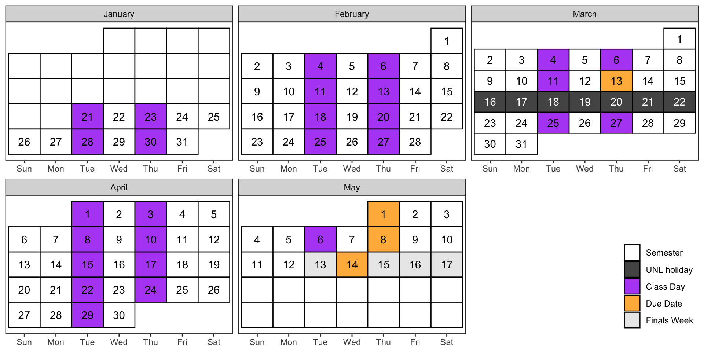

| Date | Topic |
|---|---|
| Jan 21 | Getting Started |
| Jan 23 | Version Control |
| Jan 28 | Review: Functions |
| Jan 30 | Review: Functions |
| Feb 4 | Review: Data Structures |
| Feb 6 | Review: Data Structures |
| Feb 11 | Data Input |
| Feb 13 | Data Input |
| Feb 18 | Data Visualization |
| Feb 20 | Data Visualization |
| Feb 25 | Data Cleaning |
| Feb 27 | Data Cleaning |
| Mar 4 | Exam 1 Questions |
| Mar 6 | Strings |
| Mar 11 | Strings |
| Mar 13 | Midterm Due |
| Mar 25 | Reshaping Data |
| Mar 27 | Reshaping Data |
| Apr 1 | Joining Data |
| Apr 3 | Joining Data |
| Apr 8 | Dates and Times |
| Apr 10 | Dates and Times |
| Apr 15 | Project Work |
| Apr 17 | Project Work |
| Apr 22 | Lists |
| Apr 24 | Lists |
| Apr 29 | Project Work |
| May 1 | Screencast Video Due |
| May 6 | Spatial Data |
| May 8 | Peer Review of Screencast Due |
| May 14 | Scheduled Final |
Introduction
Stat 251
2026-01-13
Introductions
Introduce yourself!
Name / Year / Major
What do you hope to learn in this class?
Previous computing experience?
Is a poptart a ravioli? Why or why not?
My Introduction
Heike Hofmann
Professor in Statistics
At UNL since August 2024, I was at ISU for 20 years
first computer language was Pascal :)
R user since 1996, Python user (? I have learned it four times by now)
On PopTarts and Ravioli:
The Cube Rule of Food, from Reddit
Thus, a PopTart is a calzone.
Syllabus
Contact Info
Email: hhofmann4@unl.edu
Office: 346D Hardin Hall North Wing
Office Hours: TBD
Course Objectives
- Use appropriate visualizations to explore and assess data and its applicability to a problem
- Write code to reshape and reformat moderately complex and/or messy data in a reproducible manner
- Create graphical displays to explore data, assess statistical models, and present model results
- Adapt pre-existing code for sophisticated visualizations to new data.
Course Objectives
- Implement an algorithm or procedure for data modification given in pseudocode
- Write pseudocode to describe and document modifications made to a data set
- Access documentation and source code to determine how software works (or why it doesn’t)
- Identify problems in a data set that limit the analyses which are appropriate for the data
Textbook
https://srvanderplas.github.io/stat-computing-r-python/

Course Materials
- Canvas
- quizzes
- weekly readings
- homework/exam/project submission
- Course site
- slides
- weekly readings
- homework/exam/project descriptions
Everything should be cross-linked properly but email me if there’s an issue.
Class Schedule
Outline
Subject to change based on the events of the semester…
Grades
| Assignments | Weight |
|---|---|
| Reading Quizzes | 10% |
| Weekly Homework & Participation | 50% |
| Midterm Exam | 20% |
| Project | 20% |
Approximately Weekly Homework – started in class
Midterm
- Homework-like problem
- Open book, open notes
- Take-home exam, tentatively aimed for the week before Spring Break
Project (ACE 10)
Individual project
Make a screencast of data exploration using methods from class
Multiple stages - second half of the semester
Academic Integrity Policy
You may (should!) work with each other on homework assignments
Work alone on exams
You must be able to explain anything you submit
At my discretion, I can use a one-on-one discussion of your work to replace the grade for that work.ChatGPT, StackOverflow, Google are tools, but they do not help you think
University Policies
https://executivevc.unl.edu/academic-excellence/teaching-resources/course-policies/
Setting Up
Install Course Software
Next Time
We’ll work on Version Control with Git
Please read before class: